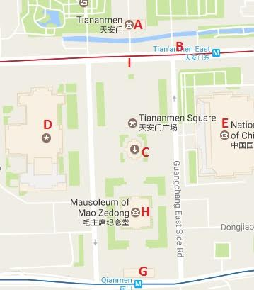

De Chinezen zelf spreken ze over het Tiananmen-plein, het plein van de Hemelse Vrede. Het Plein is één van de bekendste plaatsen van Beijing. Iedere Chinees kent het portret van de communistische leider Mao Zedong, uitkijkend op zijn eigen mausoleum op het grootste plein ter wereld. In het verleden was het onderdeel van de vele poorten naar de Verboden Stad, maar vandaag de dag is het omgeven door kolossale bouwwerken die de communisten hier een halve eeuw geleden hebben laten neerzetten. Het Plein van de Hemelse Vrede is met een lengte van 880 en een breedte van 550 meter het grootste plein ter wereld. Ter vergelijking, het is 22 maal zo groot als de Dam te Amsterdam. Het is omgeven door erg brede wegen en grote gebouwen die net als het plein zelf met opzet zo groots gebouwd zijn nadat de communisten de macht overnamen in 1949. Doordat het tegenwoordig vol staat met enorme videoschermen, grote pilaren en het mausoleum van Mao dat weer door veel bomen omgeven is, doet het plein tegenwoordig minder groot aanvoelen dan het daadwerkelijk is.
Geschiedenis & Architectuur
Het plein en de gebouwen die er op en rondom staan dateren uit 1949. Daarvoor ging
een deel van het oude stadshart tegen de vlakte. Het werd aangelegd in opdracht
van Mao als een lege scène waar miljoenenmassa's hem zouden kunnen verheerlijken.
Verder had Mao op 1 oktober 1949 de Volksrepubliek China vanaf het Plein van de
Hemelse Vrede uitgeroepen.
Het Plein van de Hemelse Vrede is 880 meter lang en 500 meter breed en kan aan
zeker een miljoen mensen plek bieden. In het centrum van het plein bevindt zich
het mausoleum waar de voormalige Chinees politicus en partijleider Mao Zedong
begraven ligt. Hiervoor is in 1954 de Keizerlijke Poort tot de laatste steen
afgebroken. Aan de noordkant van het plein ligt de Verboden Stad, de plaats
van waaruit de Chinese keizers van de Ming- en de Qing-dynastie vroeger hun rijk
bestuurden.
Gebouwen
